TRUCOS
Casi todos los
juegos tienen trucos, en el caso de Némesis 2 combinándose con
otros cartuchos/ ROMs. Hasta el momento únicamente no tengo conocimiento de que
tenga Salamander.
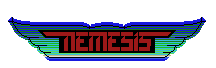
Para meter
cualquiera de estos passwords, pausa el juego (F1),
teclea el
password y pulsa RETURN.
|
Password |
Función |
|
Una vez por partida | |
|
HYPER |
Todas las armas |
|
BAKA |
Game
Over |
|
AHO |
Game
Over |
|
Una vez por fase | |
|
MISSILE |
Te da el missile potenciado |
|
DOUBLE |
Te da el double |
|
LASER |
Te da el laser potenciado |
|
OPTION |
Te da los dos options |
|
SHIELD |
Te da la shield |
|
DOWN |
Te quita todos los speeds |
|
Conseguir todas las armas en cada fase | |
|
MOMOKO |
Stage
1 |
|
CHIE |
Stage
2 |
|
AKEMI |
Stage
3 |
|
SYUKO |
Stage
4 |
|
CHIAKI |
Stage
5 |
|
NORIKO |
Stage
6 |
|
SATOE |
Stage
7 |
|
YASUKO |
Stage 8 |
|
KINUYO |
Primera fase de bonus |
|
HISAE |
Segunda fase de bonus |
|
MIYUKI |
Tercera fase de bonus |
|
YOHKO |
Cuarta fase de bonus |
La primera
fase de bonus está en la fase 2, justo antes de llegar al enemigo. Te has de
meter por la parte de abajo, en un callejón sin salida, e irás directamente a la
fase de bonus.
La segunda
fase de bonus se encuentra en la fase 3, entre dos cabezas de la parte superior
de la pantalla que se dan la espalda entre sí.
La tercera fase de
bonus está en la fase 4, en la segunda montaña que está partida por la mitad.
Para poder entrar primero has debido pasar por la mitad de todas las montañas
partidas de las fases 1 y 4.
La cuarta y última
fase de bonus está en el boss de la fase 7, en el hueco que hay entre el núcleo
y el brazo superior del enemigo.
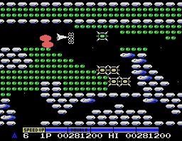
Si te matan en la
fase de bonus, apareces en la siguiente fase.

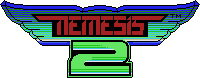
Hay algunos trucos
si metes alguno de los siguientes cartuchos en el slot #2 del
ordenador:
|
Cartucho |
Función | ||
|
Penguin Adventure |
Jugarás con Pentaro en vez de con la Metalion, y los power- ups serán pescados. | ||
|
The Maze of
Galious |
Cada vez que pierdas una vida continuarás con las armas que tenías. | ||
|
Q-Bert |
Puedes utilizar los siguientes passwords; pausa el juego (F1) escribe el password y presiona RETURN. | ||
|
Password |
Función |
| |
|
METALION |
Invulnerabilidad | ||
|
LARS18TH |
Te da todas las armas | ||
|
NEMESIS |
Pasas a la siguiente fase | ||
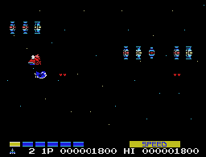
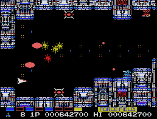
Si te metes en el
núcleo de cada enemigo destruido entrarás en una fase especial (Siempre es la
misma) en la que, si te la pasas, te darán 1 ó 2 armas especiales (Dependiendo
del tiempo que hayas tardado en destruir al enemigo. Si has tardado menos de 10
segundos te darán 2, si no, sólo una). Si te matan dentro de una de estas fases
aparecerás en la siguiente.
La primera fase de
bonus está en la fase 3 (Ancient Planet), justo debajo de las tres columnas
pequeñas que están apiladas una encima de otra.
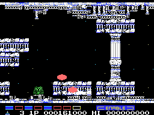
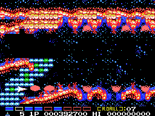
En la fase 6 (Living
Planet) se encuentra la segunda fase de bonus, situada entre las bolas que están
tras conseguir el Rotary Drill (En la parte de abajo). Dentro de la fase de
bonus hay un acceso a otra (Pero es difícil encontrarla). Como siempre, si te
matan apareces en la fase siguiente.
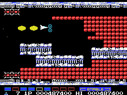
Estas fases de bonus
tienen el aspecto del Ancient Planet, y son realmente una trampa mortal. Son muy
difíciles.

Para meter
cualquiera de estos passwords, pausa el juego (F1),
teclea el
password y pulsa RETURN.
|
Password |
Función |
|
FIND |
Muestra los sitios donde están los mapas y armas secretas |
|
GOOD |
Hace que el juego sea más fácil |
|
HARD |
Hace que el juego sea más difícil |

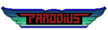
Para meter
cualquiera de estos passwords, pausa el juego (F1),
teclea el
password y pulsa RETURN.
|
Password |
Función |
|
ZENBU |
Todas las armas |
|
KONAMI |
Todas las campanas te dan el Vector Laser (Red Bell-Power) |
|
BUTAKO |
Todas las campanas te dan el Up Laser (Dark
Green Bell-Power) |
|
TAKO18TH |
Todas las campanas te dan el Rotary Drill (Dark Blue Bell-Power) |
|
PARO |
Todas las campanas te dan el White Bell-Power (Atravesar la pantalla por los laterales) |
|
KATAI |
Aumenta la duración de la Shield |
Parodius tiene 3
fases de bonus.
La primera está en
la primera fase, justo detrás de la cabeza que es enemigo mitad de
fase.
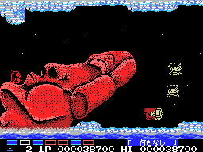
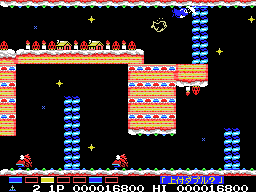
En la cuarta fase
está la segunda entrada a una fase de bonus. En el callejón sin salida que
aparece en la imagen.
La tercera y última
fase de bonus está casi al final de la fase 5, justo debajo de la última losa
que se levanta desde el suelo, tal y como se puede apreciar en la
imagen.
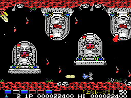